03.1：Windows 开发环境：中文 VS Code、C 语言、Python 虚拟环境
按顺序完成后，你会在 VS Code 中运行一个 C 程序和一个 Python 程序。本章不需要 GitHub 账号，Git 留到第四章再安装。
本页默认 Windows 11、Intel/AMD 的 x64 电脑。先打开“设置 → 系统 → 系统信息”，确认“系统类型”包含 x64；ARM 电脑请先看 MSYS2 ARM64 说明，不要直接照搬这里的 x64 编译器路径。
1. 安装 VS Code，先切换中文
- 打开 VS Code 下载页，选择 Windows 的 User Installer、x64。
- 下载后双击安装程序，阅读并接受协议，保持默认安装目录。
- 在“附加任务”页勾选 添加到 PATH（重启后生效），完成安装并打开 VS Code。
- 按
Ctrl+Shift+X打开扩展页（也可点击窗口最左侧竖栏中四个小方块组成的“扩展”图标），在左侧扩展面板最上方的搜索框粘贴MS-CEINTL.vscode-language-pack-zh-hans。 - 核对扩展是 Microsoft 发布的 Chinese (Simplified) Language Pack，点击 Install。也可从 中文扩展直达页 点击安装并允许打开 VS Code。
- 右下角会弹出改变语言，点它
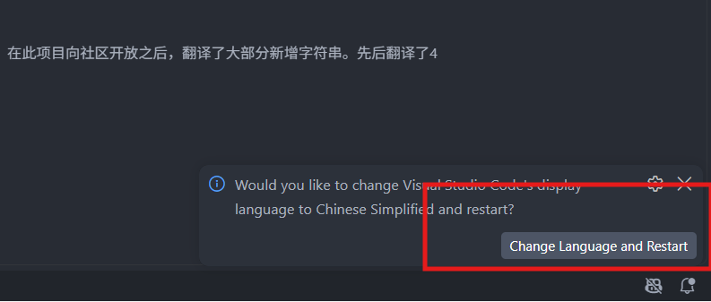
检查成功： 顶部菜单显示“文件、编辑、查看、终端”等中文文字。部分扩展命令仍然显示英文是正常的，后文会给出可搜索的英文名称。
2. 准备项目文件夹和终端
- 按
Win+E打开文件资源管理器，进入“文档”。 - 右键空白处 → 新建 → 文件夹，命名为
code。 - 进入
code，再新建hello-c文件夹。 - 回到 VS Code，点击“文件 → 打开文件夹”，选择刚才的
hello-c，点击“选择文件夹”。如果询问是否信任作者，确认这是自己创建的文件夹后点击信任。 - 点击“终端 → 新建终端”。下方会出现终端
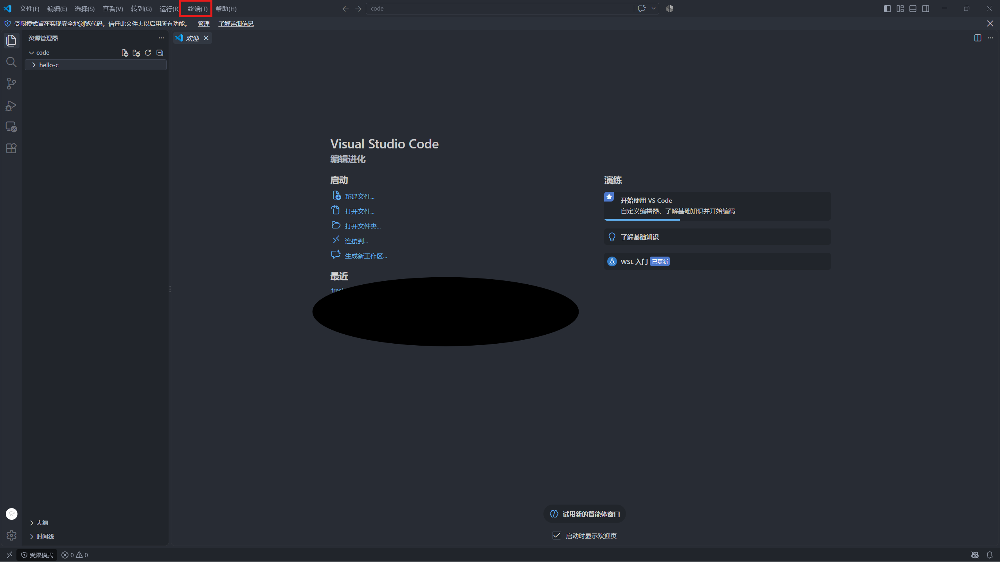
- 输入
pwd并回车。输出的路径末尾应是code\hello-c。实际路径可能含 OneDrive，以你自己选择的目录为准。
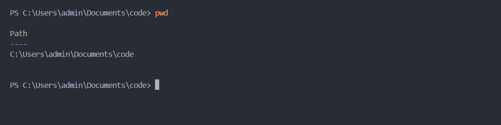
后文写“VS Code 终端”都指这个 PowerShell 窗口。代码块只复制其中内容，不复制围栏、行号或 PS C:\...> 提示符。每条命令按回车执行，报错就先停在当前步骤。
3. 安装 C/C++ 扩展
- 按
Ctrl+Shift+X，搜索ms-vscode.cpptools。 - 安装 Microsoft 发布的 C/C++：扩展直达页。
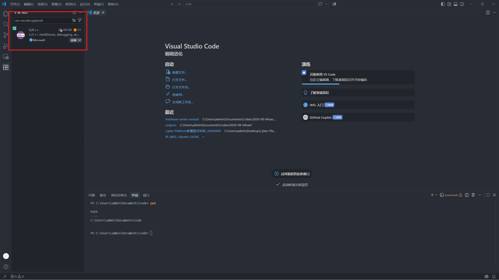
- 等待安装完成。接下来还要安装编译器，仅安装这个扩展不能运行 C 程序。
4. 安装 C 编译器和调试器
- 打开 MSYS2 官网，下载 x86_64 安装程序。
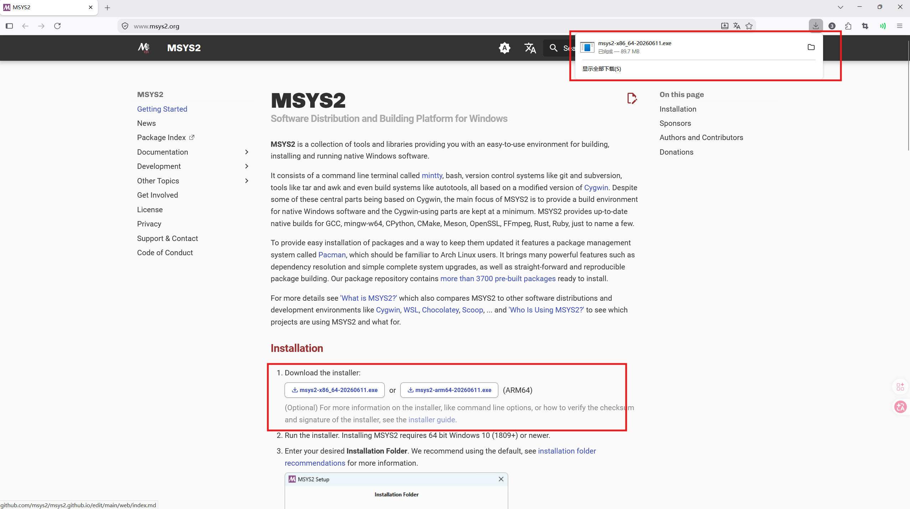
- 双击安装程序，安装路径保持
C:\msys64，其余按默认选项完成。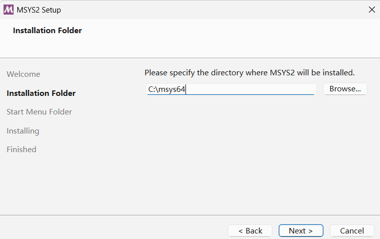
- 从 Windows 开始菜单搜索并打开 MSYS2 UCRT64。以下命令在这个新窗口执行，不是在 PowerShell 执行。
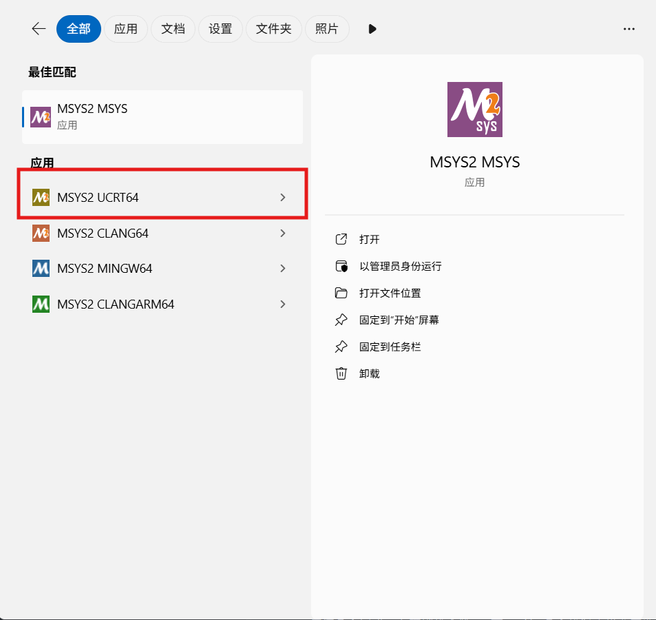
- 输入下面命令并回车：
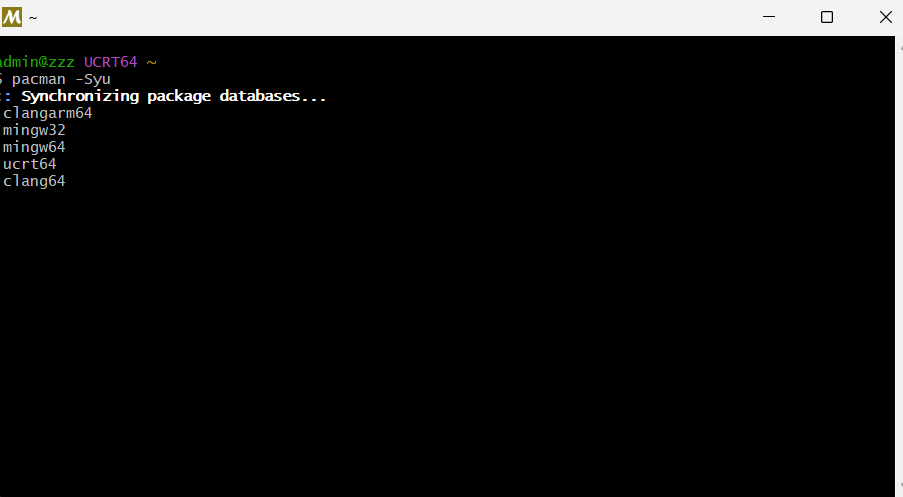
如果询问是否继续，输入 Y 并回车。如果提示必须关闭终端，按提示关闭，再从开始菜单打开 MSYS2 UCRT64，重新执行 pacman -Syu，直到更新完成。(一般来说会有一次的)
接着安装工具：
出现选择软件包编号的提示时直接回车，保留全部；询问是否继续时输入 Y 并回车。等待重新出现可输入命令的提示符。
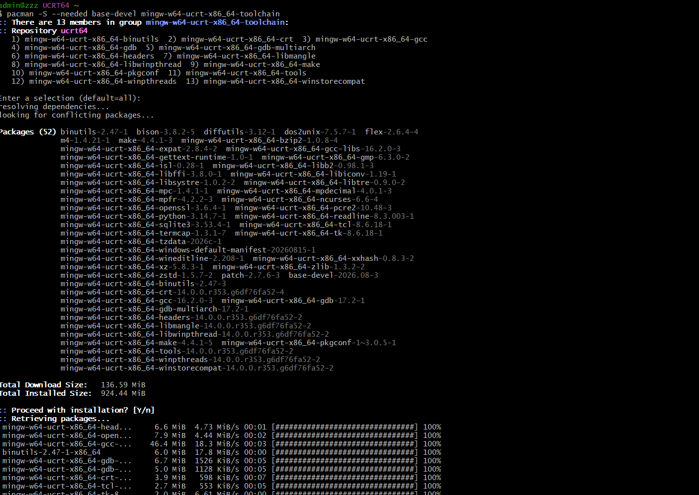
5. 添加编译器路径
- 按 Win，搜索“编辑账户的环境变量”并打开。
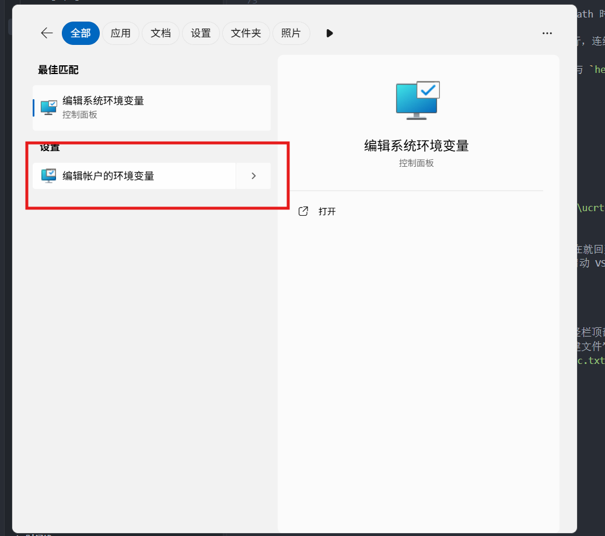
- 在上半部分“用户变量”中选中
Path，点击“编辑”。没有 Path 时点击“新建”，变量名填Path，值填下面的路径。
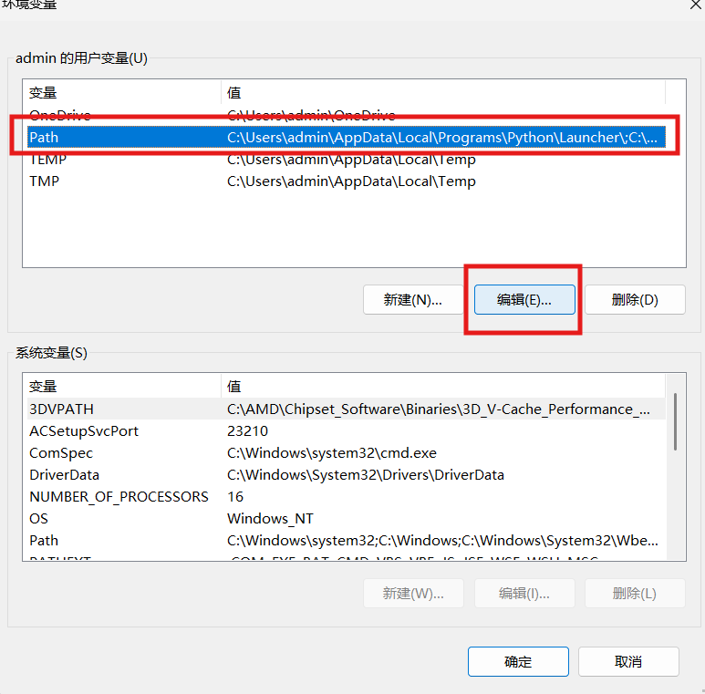
- 点击“新建”，添加
C:\msys64\ucrt64\bin。保留原有各行，连续点击“确定”保存。（有两个确定需要点，注意）
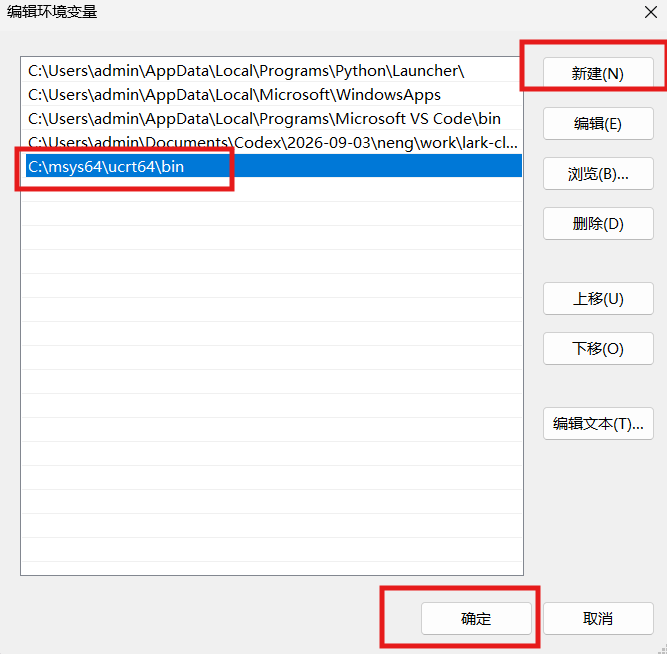
- 完全退出所有 VS Code 窗口和终端，再重新打开 VS Code 与
hello-c文件夹。 - 点击“终端 → 新建终端”，逐条执行：
检查成功： 前两条显示版本信息，第三条包含 C:\msys64\ucrt64\bin\gcc.exe。
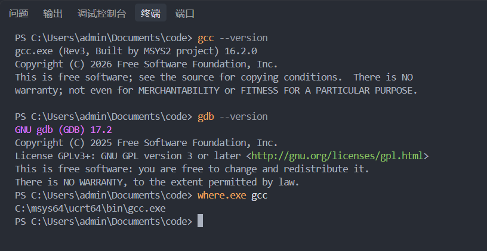
若找不到 gcc：在资源管理器中检查该文件是否存在。文件不存在就回到第 4 节检查安装是否完成；存在则检查第 5 节 Path 是否拼写正确并重新启动 VS Code。不要把整个 Path 替换为这一条。
或者把当前博客直接发给之前安装的Qoder这种AI IDE，然后问问它发生了什么，以及怎么做
6. 编译并运行第一个 C 程序
- 按
Ctrl+Shift+E打开 VS Code 的资源管理器（最左侧竖栏顶部的文件图标）。在展开的HELLO-C文件夹下面的空白处点右键 → “新建文件”，输入hello.c并回车。不要新建成文件夹，也不要保存成hello.c.txt。
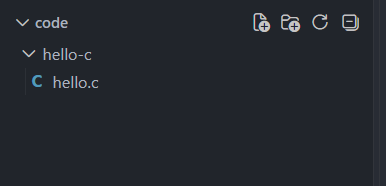
- 粘贴以下完整内容，按
Ctrl+S保存：
- 在 VS Code 的 PowerShell 终端逐条执行：
终端中可以直接粘贴的，不过要按
Ctrl+Shift+V
检查成功： 第一条命令没有报错，第二条输出 Hello, C!。
- 提示
hello.c: No such file：在左侧确认文件已保存为hello.c，再输入pwd检查当前终端是否在hello-c中。可在左侧文件夹右键“在集成终端中打开”。 - 提示找不到
hello.exe：先看上一条编译命令是否报错，编译失败时不要继续运行。 - 修改代码后输出没变：先
Ctrl+S，重新执行编译命令，再运行。以后每次修改都按这个顺序。
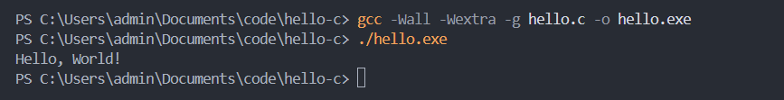
7. *让 VS Code 识别编译器，练习断点调试
- 打开
hello.c，按Ctrl+Shift+P，搜索C/C++: Edit Configurations (UI)。
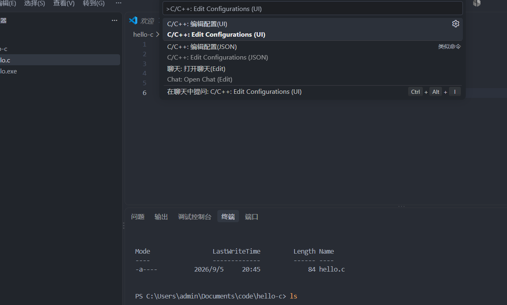
- 中间编辑区会打开配置表单，向下滚动找到“编译器路径”（Compiler path）输入框，将它选为或填为
C:\msys64\ucrt64\bin\gcc.exe，IntelliSense 模式选择windows-gcc-x64。 - 返回
hello.c，点击printf那一行行号左边，看到红点。
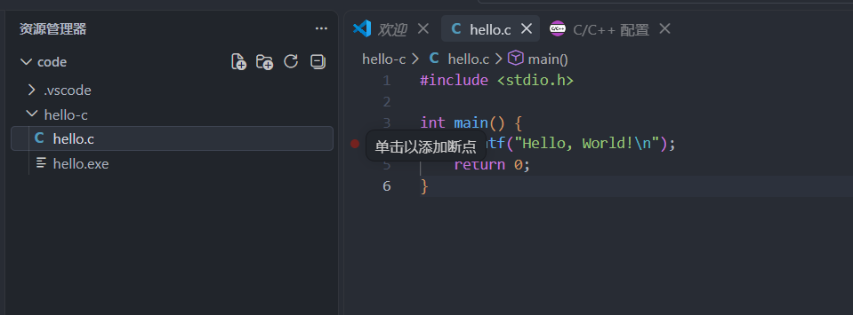
- 点击编辑器右上角运行按钮旁的下拉箭头，选择“调试 C/C++ 文件”（Debug C/C++ File）。
- 在编译器列表中选择 gcc.exe 生成和调试活动文件，核对其路径是上面的 UCRT64 路径。
- 程序停在红点处后，按 F10 单步，按 F5 继续执行。
检查成功： 程序能停在断点，继续后终端出现 Hello, C!。若弹出选择环境，选择 C++ (GDB/LLDB)。若没有检测到 gcc，先回到第 5 节验证路径。
8. 安装 uv，再由 uv 安装 Python
下面步骤在 Windows 的 PowerShell 中执行。uv 会管理 Python 版本、项目虚拟环境和依赖，不需要先单独安装 Python。
- 按 Win，搜索 PowerShell 并打开普通窗口。
- 执行：
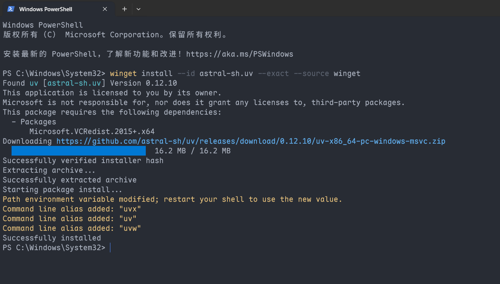
- 完成后关闭所有 VS Code 与终端窗口，重新打开 VS Code，再新建 PowerShell 终端。
- 检查：
检查成功： 输出以 uv 开头的版本号。
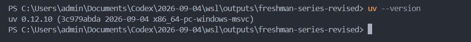
如果 winget 找不到，打开 Microsoft Store，安装或更新 应用安装程序，重新打开 PowerShell 再试。如果安装成功后 uv 仍找不到，先重启 Windows，再检查；其他安装方式见 uv 官方安装说明。
接着执行：
检查成功： 提示 Python 3.13 已安装或已存在。下载失败时保留完整报错，先检查网络再重试。同一台 Windows 安装一次 uv 即可；WSL 需要在 Ubuntu 中单独安装。
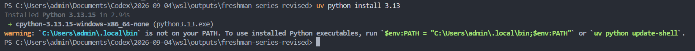
我们可以看到下面有一段提示，这个是把虚拟环境配置到path中
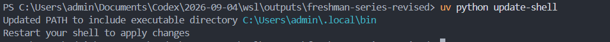
9. 创建 uv 项目与虚拟环境
- 按
Ctrl+Shift+X，在左侧顶部的扩展搜索框输入ms-python.python，点击 Microsoft 发布的 Python → “安装”。然后分别搜索ms-python.vscode-pylance和ms-python.debugpy，确保 Pylance 与 Python Debugger 也已安装；详情页出现“禁用/卸载”而不是“安装”表示已经装好。官方直达页：Python、Pylance、Python Debugger。 - 在文件资源管理器“文档 → code”中新建一个空文件夹，命名为 hello-python-uv。
- 在 VS Code 点击“文件 → 打开文件夹”，选择这个空文件夹。
- 点击“终端 → 新建终端”，输入 pwd，确认路径末尾是 hello-python-uv。
- 逐条执行：
检查成功： 左侧出现 pyproject.toml、.python-version、uv.lock 和 .venv；最后一条显示 Python 3.13.x。uv init 生成的 main.py 与 README.md 可以保留。
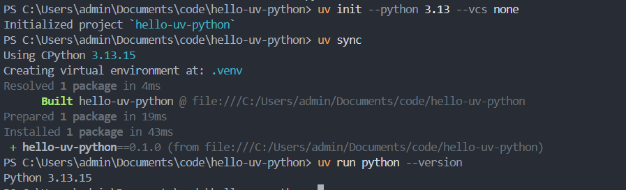
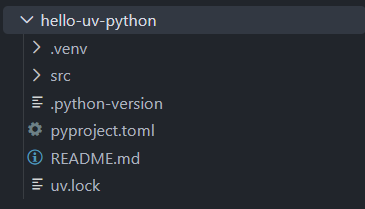
这里使用 --vcs none，Git 留到注册账号后再配置。如果提示项目已初始化，不要反复执行 uv init，检查当前文件夹的 pyproject.toml，再执行 uv sync。之前已经有项目或 .venv 的同学，先使用上述新的空目录练习，不要覆盖已有项目。
10. 选择 VS Code 解释器并运行
- 按
Ctrl+Shift+P，在窗口顶部弹出的命令框中输入Python: Select Interpreter，点击同名命令（中文可能显示“Python: 选择解释器”）。
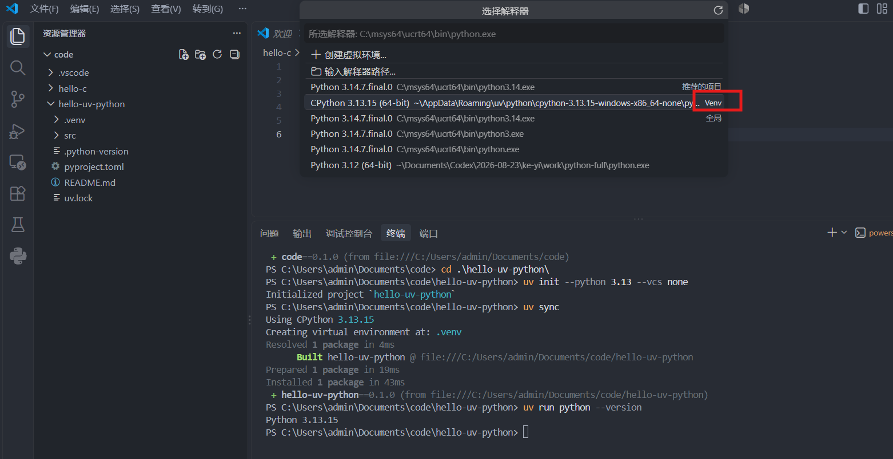
- 选择当前项目中 .venv\Scripts\python.exe 对应的解释器。
- 没有找到时，选择“输入解释器路径 → 查找”，在 hello-python-uv.venv\Scripts 中选择 python.exe。
- 按
Ctrl+Shift+E返回左侧项目文件列表，在HELLO-PYTHON-UV文件夹下面的空白处右键 → “新建文件”，输入hello.py并回车。将下面内容粘贴到中间编辑区，按Ctrl+S保存：
- 在项目的 PowerShell 终端运行：
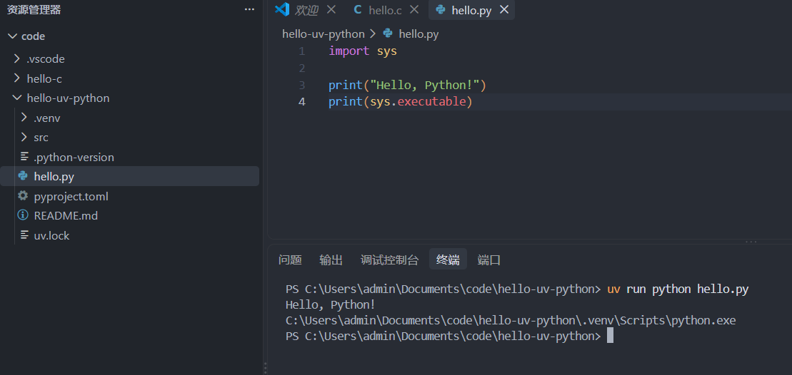
检查成功： 输出 Hello, Python!，下一行路径包含 hello-python-uv.venv\Scripts\python.exe。
以后运行这个项目都用 uv run python 文件名。无需手动激活环境；如果 VS Code 自动激活时提示脚本被禁止，也可以直接使用 uv run，不必修改执行策略。
11. 添加、查看和删除依赖
在当前项目终端逐条执行：
检查成功： 第二条显示 requests 的版本号，第三条显示项目依赖树。打开 pyproject.toml，确认 dependencies 中出现 requests；uv.lock 也会随之更新。这两个文件由 uv 管理，无需手动维护 requirements.txt。
如果需要删除不再使用的依赖，执行以下命令；这一步为可选练习：
删除后再次需要它，就重新执行 uv add requests。不要直接删除 .venv 中的库文件。
下载失败： 保存错误原文；网络超时先检查连接再重试。出现 No solution found 时，记录你添加的包名和 Python 版本，让 AI 检查兼容性，不要直接更换整个环境。
12. 下次继续、调试与恢复环境
- 继续项目：用 VS Code 打开 hello-python-uv，终端运行 uv sync，再运行 uv run python hello.py。
- 调试：在 hello.py 的 print 行左侧点红点，确认 VS Code 选中了 .venv 解释器，按 F5，选择 Python Debugger → Python File；按 F10 单步，F5 继续。
- 新项目：新建空文件夹，重复第 9 节的初始化步骤，每个项目有自己的 .venv。
- 格式化：按需安装 Microsoft 的 Black Formatter，打开 .py 文件按 Shift+Alt+F，首次提示时选择 Black Formatter。
- 换电脑或 Windows/WSL 切换：保留源代码、pyproject.toml、uv.lock 和 .python-version。在另一台设备安装 uv，打开项目目录执行 uv sync --locked，再用 uv run python hello.py 运行。不要复制 .venv。
- 更新 uv：Windows 通过 WinGet 安装的版本用 winget upgrade --id astral-sh.uv --exact。
- C++ 课程：本章的工具链也包含 g++；Java、Node.js 等在课程需要时再单独安装。
换电脑恢复失败： 如果提示缺少锁文件或锁文件需要更新，先检查是否复制完整或拉取到最新代码。请原作者在项目中执行 uv sync 并保存更新后的 uv.lock，再重新同步，不要直接删掉锁文件。
参考：uv 项目教程、VS Code Python 环境说明。
完成清单
- [ ] VS Code 菜单已切换中文。
- [ ] gcc 与 gdb 能显示版本，C 程序输出
Hello, C!。 - [ ] C 程序能在断点停下。
- [ ] Python 程序输出
Hello, Python!，解释器路径包含当前项目的.venv。 - [ ] 已用 uv add 添加 requests，并成功导入验证（删除练习前）。
- [ ] 已保留 pyproject.toml、uv.lock 和 .python-version，知道用 uv sync 恢复环境。
- [ ] 知道下次如何打开项目、保存、运行和调试。
需要 Linux 时继续 WSL + VS Code；暂时不需要可直接阅读 04 账号注册与 Git。